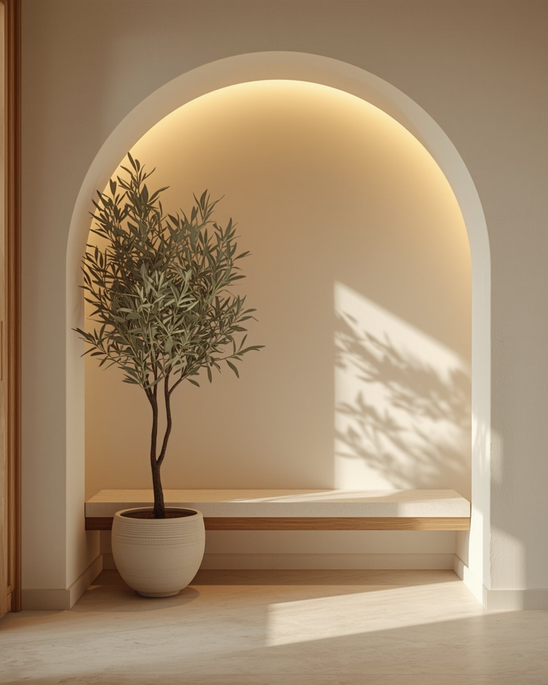
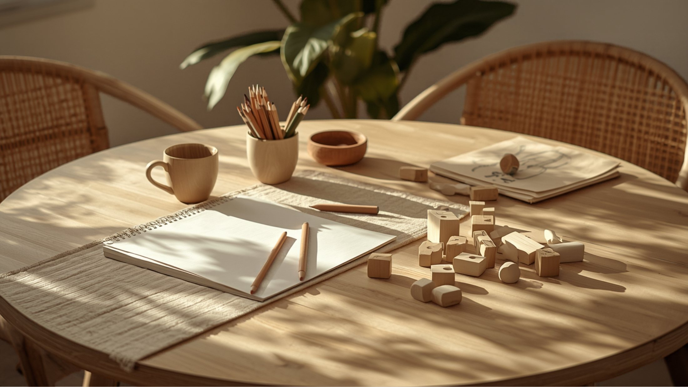
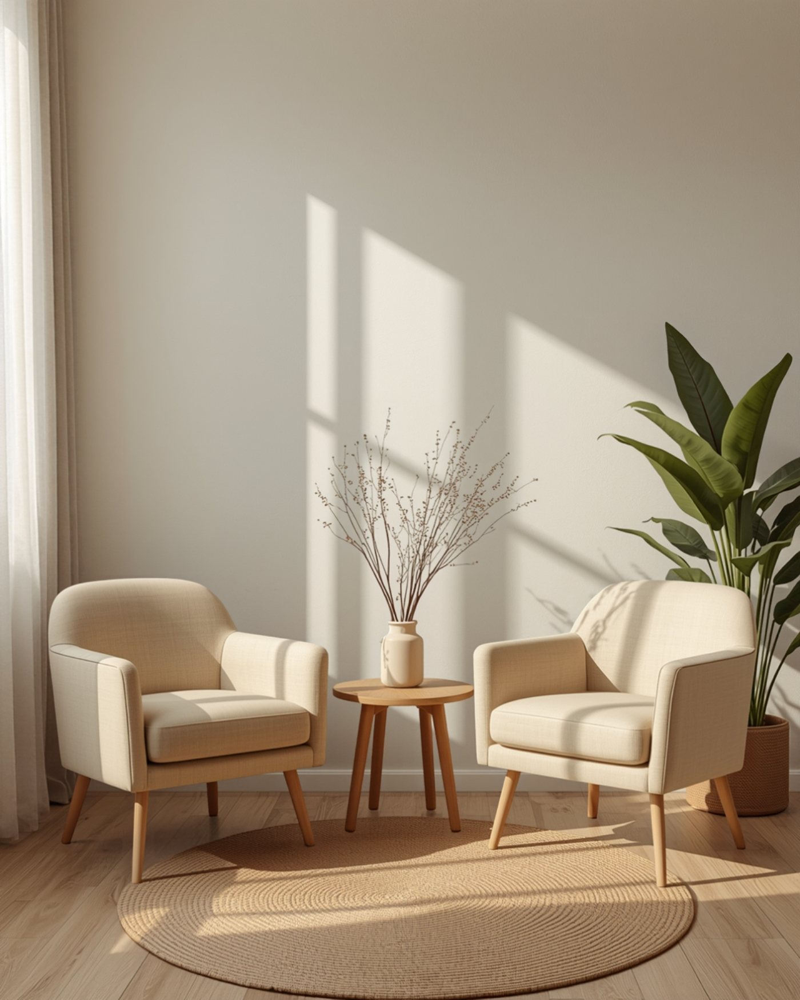
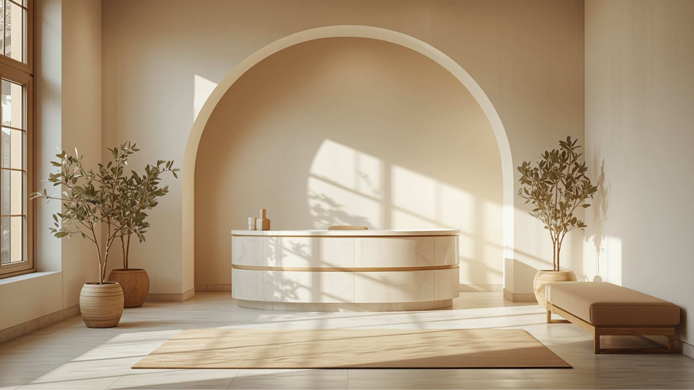
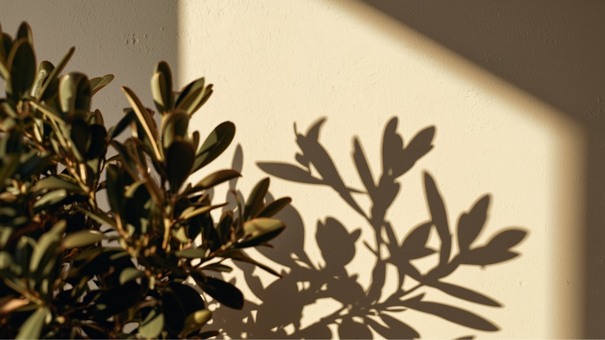

Çocuk ve Ergen Danışmanlığı
Duygu düzenleme, kaygı, akran ilişkileri, okul uyumu ve davranış süreçlerinde çocuk ve ergenlere yönelik psikolojik danışmanlık.
Detaylı BilgiÇocukların, ebeveynlerin ve ailelerin iyi olma halini destekleyen bütüncül bir gelişim merkezi. Danışmanlık, oyun ve atölye deneyimini aynı çatı altında buluşturuyoruz.
Küçük adımlar, büyük dönüşümler

"Daha bilinçli ebeveynler, daha mutlu çocuklar, daha güçlü aileler."KOI Yaklaşımı

KOI; çocukların, ebeveynlerin ve ailelerin yaşam yolculuğunda yanlarında olmayı amaçlayan bütüncül bir gelişim merkezidir. Psikolojik danışmanlık, aile danışmanlığı, oyun temelli çalışmalar ve atölyelerle her yaştan bireyin potansiyelini destekleyen güvenli ve ilham verici bir alan sunar.
Farkımız; danışmanlık ve gelişim odaklı hizmetlerle oyun ve atölye deneyimini birbirinden koparmadan, tek bir bütün olarak sunmamızdır.
Her bireyin ve ailenin kendine özgü ihtiyaçlarına uygun, uzmanlıkla tasarlanmış hizmetler.
Duygu düzenleme, kaygı, akran ilişkileri, okul uyumu ve davranış süreçlerinde çocuk ve ergenlere yönelik psikolojik danışmanlık.
Detaylı Bilgi
Ebeveynlik süreçleri, aile içi iletişim, sınır koyma ve güvenli bağ kurma üzerine yürütülen danışmanlık görüşmeleri.
Detaylı BilgiYaş ve gelişim dönemine göre ayrıştırılmış, küçük gruplu programlar.
Detaylı Bilgi
Hamilelik dönemi, doğum sonrası uyum ve yenidoğanla kurulan ilk bağ süreçlerinde annelere ve ailelere destek.
Detaylı BilgiHafta sonlarında düzenlenen, ebeveynlere ve eğitimcilere yönelik seminer ve uygulamalı workshop programları.
Detaylı BilgiAilelerin kendilerini güvende hissedeceği, çocukların özgürce keşfedebileceği nitelikli bir alan.
Çocuğu tek başına değil; ailesi, okulu ve çevresiyle birlikte ele alırız.
Oyunu bir yöntem olarak kullanır, gelişimi çocuğun kendi dilinden destekleriz.
Seans başına en fazla 6 çocuk ile her katılımcıya yeterli alan ve ilgi.
Alanında eğitimli psikolojik danışman ve uzmanlarla yürütülen süreçler.
Haftanın 5 günü, günde 2 seans olarak planlanan oyun gruplarımız; yaş ve gelişim dönemine göre ayrıştırılır.
Alanında eğitim almış uzmanlarla, bilimsel ve şefkatli bir yaklaşım.
Psikolojik Danışman
Aile danışmanlığı, çocuk merkezli oyun terapisi ve cinsel terapi eğitimi.
Çocuk Gelişim Uzmanı
Uzmanlık alanı ve kısa özgeçmiş metni bu alanda yer alacaktır.
Klinik Psikolog
Uzmanlık alanı ve kısa özgeçmiş metni bu alanda yer alacaktır.
Atölye Eğitmeni
Uzmanlık alanı ve kısa özgeçmiş metni bu alanda yer alacaktır.
Kızımın kendini ifade etme biçimi tamamen değişti. Süreç boyunca biz de ebeveyn olarak desteklendik.
Oyun grubundaki küçük kontenjan sayesinde oğlum kendini çok rahat hissetti. Ortam gerçekten sıcak.
Ebeveyn atölyesinden sonra evdeki iletişim dilimiz değişti. Uygulanabilir, gerçekçi öneriler aldık.
* Yorumlar taslak amaçlı örnek metinlerdir; yayın öncesi gerçek veli yorumlarıyla değiştirilecektir.
Gelişim, ebeveynlik ve oyun üzerine uzmanlarımızın kaleminden yazılar.
Okul, kardeş, taşınma… Uyum süreçlerinde çocuğun yanında nasıl durulur?
Yazıyı OkuAkran ilişkisi, sıra bekleme ve duygu düzenleme neden en iyi oyun içinde öğrenilir?
Yazıyı OkuSınır koymak sevgiyi azaltmaz; güveni büyütür. Peki bunu günlük hayatta nasıl kurarız?
Yazıyı OkuAçılış öncesi profesyonel çekimlerle güncellenecek görsel alanları.


Siz de KOI yolculuğunun bir parçası olun. Ön başvuru formunu doldurun, uzmanlarımız sizinle iletişime geçsin.